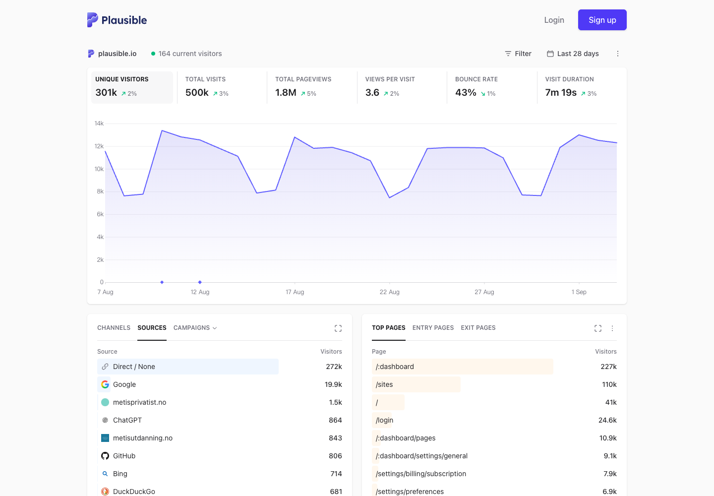
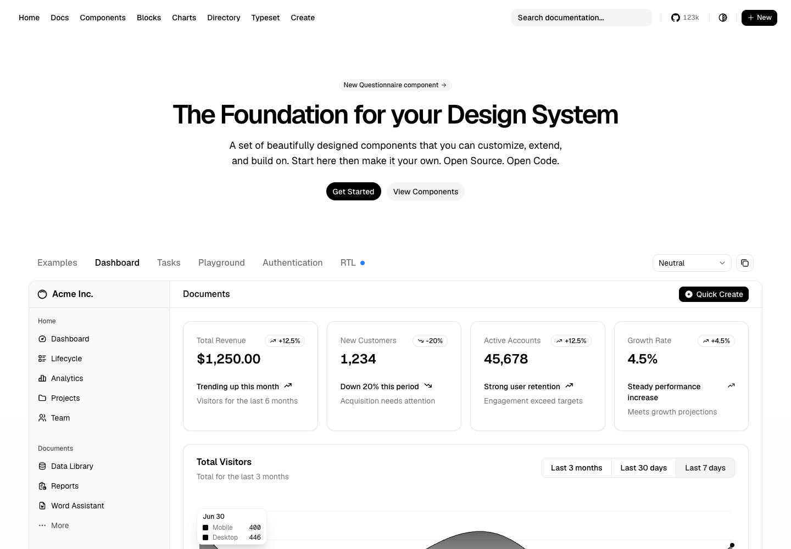
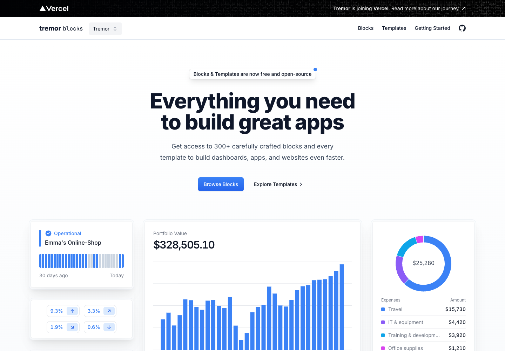

别人家的高级感
你说"你这都不行"——好，先看别人。以下三个是公开可访问、公认视觉水准最高的数据产品页面。点链接可以打开活的自己玩。
① Plausible Analytics · 公开数据看板
打开活的 ↗
KPI 行的做法大写微标签 + 24px 级 tabular 大数字 + 小箭头 delta（绿涨红跌），六格等分、发丝线分隔——信息密度高但极安静。
单一主图表一张大面积软填充 area chart 占主视觉，坐标轴弱化为浅灰微字；不堆图表，一屏一个主角。
列表卡的行内条Top Pages 用行内米色横条做占比可视化，不画柱状图也有数据感；选中行浅蓝高亮。
② shadcn 官方 Dashboard 示例
打开活的 ↗
纯中性色板全页只有黑白灰，主按钮纯黑圆角；唯一色彩来自数据（图表灰阶渐变）。与我们 Master §8.5"黑白灰中性"同源。
delta pillKPI 卡右上角的 +12.5% 小药丸（带方向箭头），比裸文字 delta 更精致。
shell 同族左侧 sidebar-03 结构——我们平台 shell 就是这条线，导航冻结后视觉语言仍与它一致。
③ Tremor Blocks（Vercel 系）· 企业级块库
打开活的 ↗
状态卡"Operational" 蓝色对勾+竖线强调+30 天活动迷你条（逐日小柱），一张卡说清"活着+最近怎样"——我们的任务/Agent 卡可学。
大金额式 KPI$328,505.10 这种"一个巨大数字+下方全宽柱状图"的资产卡，适合批次成本/Token 总量展示。
环图+图例表donut 中心放总数，右侧图例即表格（名称+金额对齐）——失败六分类的可视化可参考。
对照结论（我的自检）：我们 _skin.css 的排版/色板方向与 ② 同源、与 ① 的 KPI 手法部分重合，差距在三处——（1）原型里没有真图表建议：两个质检 dashboard 重做时直接以 ① 为主标杆（它就是"质量总览"的业界最优形态），批次详情状态带升级 KPI 层级+失败分类环图，任务/Agent 卡学 ③ 的状态卡迷你条。你看完活的之后告诉我：认 ① 的安静极简，还是 ③ 的企业密度，或者混搭——我按你定的锚重调皮肤。